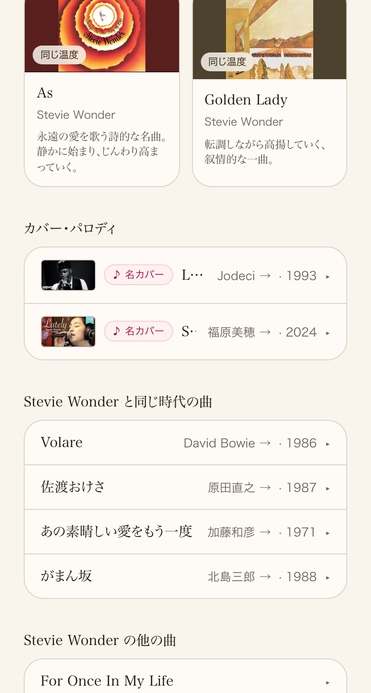
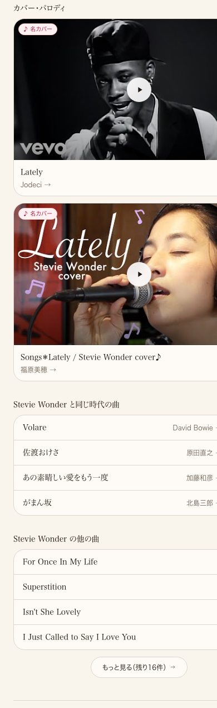
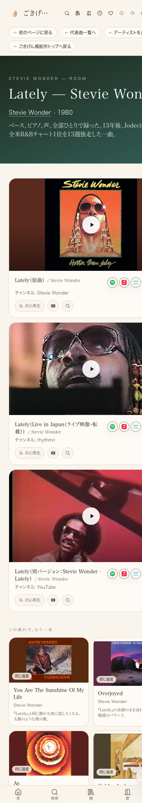
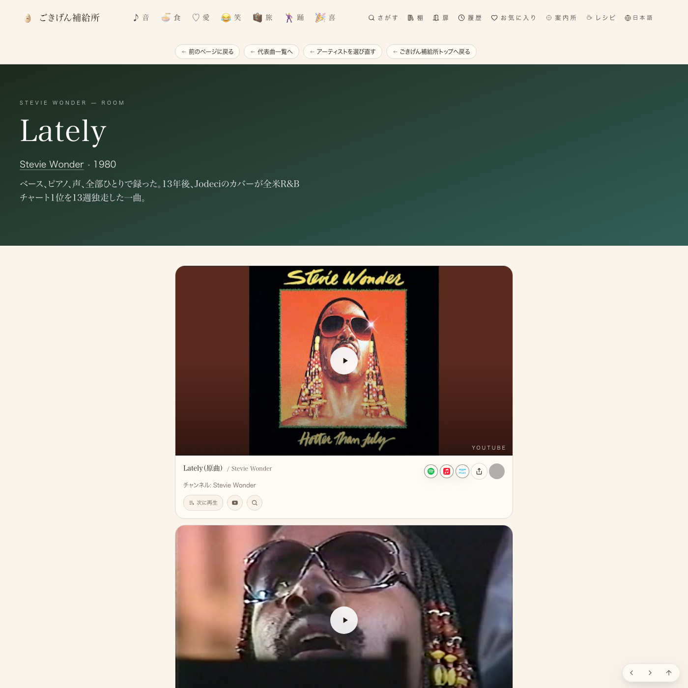

共有資料の一覧 ／ 確認ページ #690 Lately(Stevie Wonder)：本番の今の状態を実測で確認
#690 Lately(Stevie Wonder)：本番の今の状態を実測で確認
2026-09-11 実装・main合流・本番(GitHub Pages)反映まで実測確認
たまごさんの見本ページ指定(Lately/Stevie Wonder)を、本番URLに直接headless Chromeで接続して実測した。バッジは正解ページakikoと同じ短辺13.8%、同じ行のカード高さ差は0px、棚編集ボタンとの重なりは0件。カバー・パロディは以前の小さな一覧行(before)から、本人動画と同じフルサイズの動画カードに変わった(after)。measured against 本番URL directly (x-deployment-id: ae458e30..., 2026-09-11実測)
② 数字
13.8%バッジの高さ・サムネ短辺比(目標と完全一致・全5箇所)
0px同じ行のカード高さの差(3グループ全て)
0件棚編集ボタンとバッジの重なり
③ 実データでのスクリーンショット
以前:カバー・パロディが小さい一覧行
今:本人動画と同じフルサイズの動画カード
本編動画(フルサイズ・スマホ)
1・2・3ともフルサイズで縦に並ぶ
本編動画(PC幅)
PC幅でもフルサイズ
④ 押せるリンク
⑤ 何をどう確かめたか
| 確認項目 | 結果 |
|---|
| バッジがサムネ短辺13.8%か(お手本akikoと一致) | PASS(全5箇所) |
| 同じ行のカード高さが揃っているか | PASS(3グループ・差0px) |
| 棚編集ボタンとバッジが重ならないか | PASS(0件) |
| メイン動画がフルサイズか(以前は右半分に小さく3枚) | PASS(フルサイズ縦積み・スマホ/PC両方) |
| カバー・パロディが本人動画と同じサイズか | PASS(フルサイズの動画カード2枚) |
| コピーが書き直されているか(旧:静かなピアノの夜) | PASS(Jodeciカバーの事実に差替済み) |
| コラボ・共演・CM欄にバッジを付けられるか | PASS(CardActionCluster配線済み・コード確認) |